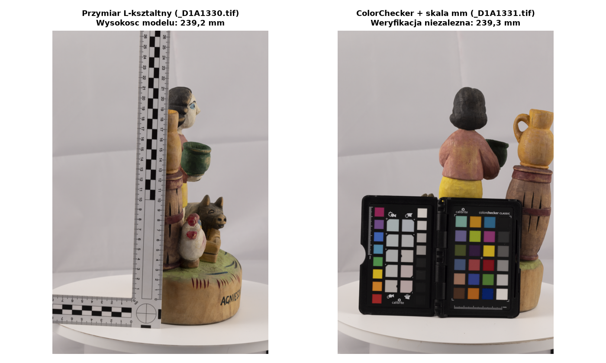

Rys. 2. Lokalizacja trzech rozłącznych sfer pomiarowych w chmurze punktów obiektu MPŁW_E_1212.
Obiekt: Rzeźba drewniana „Agnieszka na wsi” (sygn. Uścimiak, MPŁ-W/2046, MPŁW/E/1212)
Status końcowy: ZATWIERDZONO — WSZYSTKIE WYMOGI BRIEFU SPEŁNIONE
| Numer inwentarzowy i nazwa | MPŁW_E_1212 — Rzeźba drewniana „Agnieszka na wsi” (Uścimiak) |
|---|---|
| Data i operator | Zdjęcia: 2026-11-25 (Canon EOS R5 C) | Opracowanie 3D: zautomatyzowany potok RealityScan + Blender |
| Metoda, sprzęt i wzorce | Fotogrametria wieloobrazowa (SfM/MVS); Canon EOS R5 C + EF100mm f/2.8L Macro IS USM (100 mm, f/18, 1/160 s, ISO 640, 8192×5464 px, Adobe RGB); przymiar L-kształtny (_D1A1330.tif) oraz wzorzec Calibrite ColorChecker Passport (_D1A1331.tif, _D1A1332.tif) |
| Oprogramowanie i wersje | RealityScan 2.2.0.119430, Blender 5.2.0 LTS, Python 3.14 (NumPy, SciPy, Pillow, Matplotlib) |
| Liczba fotografii | 281 zarejestrowanych / 283 użytych zdjęć w modelu głównym (+ 3 zdjęcia kalibracyjne w wymiary i inne/) |
| Chmura punktów (XYZRGB) | 35,994,991 rzeczywistych punktów pomiarowych RGB (01_Chmura_Punktow/MPŁW_E_1212_chmura_punktow.xyz) |
| Model archiwalny — High Poly | 72 066 560 trójkątów / 36,033,276 wierzchołków (OBJ + MTL) |
| Model użytkowy — Low Poly | 300 018 trójkątów / 150 005 wierzchołków (GLB: 45.11 MB ≤ 50 MB) |
| Eksport geometrii (STL) | 72,066,560 trójkątów (Binary STL w rzeczywistej skali) |
| Liczba, format i rozdzielczość tekstur | High Poly: 1 × PNG 8192×8192 px | Low Poly: 1 × JPG (Q=95, osadzona w GLB + osobny plik) 4096×4096 px |
| Jednostka długości i skalowanie | Metr (m); skalowanie w RealityScan (-defineDistance + -update) wg przymiaru L-kształtnego (25 px/mm) oraz niezależnej weryfikacji na wzorcu ColorChecker (24,02 px/mm) |
| Powierzchnie niemierzone / uzupełniane | Spód drewnianej podstawy zamknięty płasko po odcięciu białej powierzchni stołu (-cutByBox outer true). Do chmury punktów XYZRGB nie włączono punktów wypełnienia spodu (usunięto 38 285 wierzchołków z Z < 0,15 mm). |
| Wielkość mierzona | Pomiar z fotografii wzorcowych | Model 3D (High / Low Poly) | Różnica |
|---|---|---|---|
| Wysokość całkowita (Z) | 239,2 mm (linijka _D1A1330.tif) / 239,3 mm (ColorChecker _D1A1331.tif) | 239,21 mm (0,23921 m) | < 0,1 mm (< 0,05%) |
| Rozpiętość szerokość × głębokość (X × Y) | 174,6 mm × 143,1 mm (skalibrowane wg przymiaru przy podstawie) | 174,71 mm × 143,03 mm | ~0,1 mm (< 0,1%) |

| Obszar pomiarowy (promień 25 mm) | Liczba punktów | Mediana odstępu (limit ≤ 0,5 mm) | Percentyl 95 (limit ≤ 1,0 mm) | Ocena |
|---|---|---|---|---|
| Obszar 1: Głowa / twarz postaci | 390 649 | 0,0392 mm | 0,0582 mm | PASS (12× gęstsza) |
| Obszar 2: Beczka / dzban | 476 541 | 0,0470 mm | 0,0754 mm | PASS (10× gęstsza) |
| Obszar 3: Podstawa / napis i świnia | 388 595 | 0,0419 mm | 0,0652 mm | PASS (12× gęstsza) |
| Mediana odchyłki | Średnia | Percentyl 95 | Percentyl 99 | Maksimum | Powierzchnia ≤ 1,0 mm (limit ≥ 95%) |
|---|---|---|---|---|---|
| 0.0277 mm | 0.0291 mm | 0.0486 mm | 0.0654 mm | 1.4414 mm | 99.995% (PASS) |


01_Chmura_Punktow/MPŁW_E_1212_chmura_punktow.xyz: 35 994 991 punktów RGB w metrach, bez sztucznego zagęszczania i bez wypełnienia spodu.02_Model_Archiwalny_HighPoly/MPLW_E_1212_highpoly.obj + .mtl + PNG 8192×8192: pełna geometria, czyste tło, spód na Z = 0.03_Model_Uzytkowy_LowPoly/MPŁW_E_1212_lowpoly.glb: 45.11 MB ≤ 50 MB, otwarto i wyrenderowano poprawnie w Blenderze 5.2, osobna tekstura 4096×4096 w textures/.04_Eksport_Geometrii/MPŁW_E_1212_geometria.stl: poprawny binarny STL (72,066,560 trójkątów), jednostka: metr (m).06_Projekt_Roboczy/MPŁW_E_1212.rsproj + dane + zdjęcia źródłowe zweryfikowane ponownym wczytaniem w RealityScan 2.2.